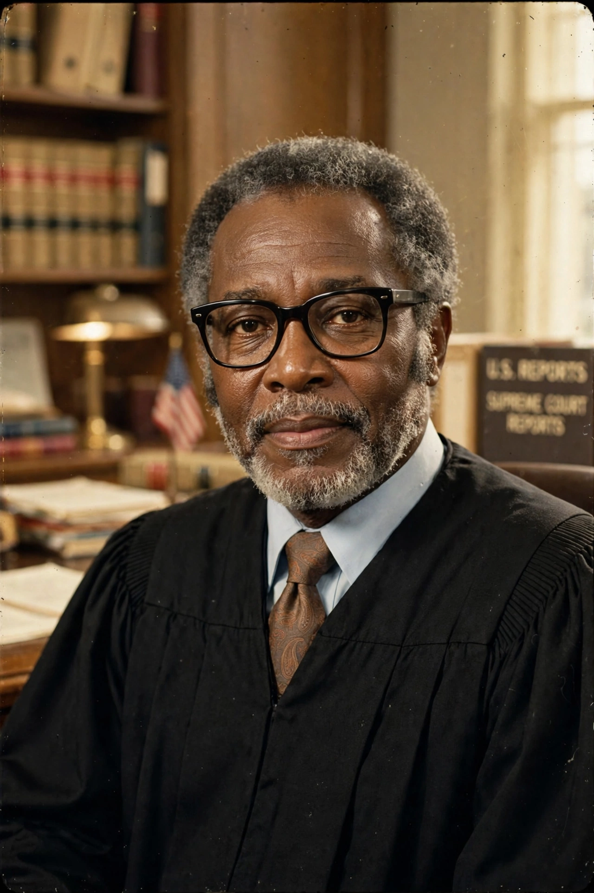

Thurgood Marshall

| Thurgood Marshall | |
|---|---|
| Born | 2 July 1908, Baltimore, Maryland, U.S. |
| Died | 24 January 1993, Bethesda, Maryland, U.S. |
| Office | Associate Justice of the U.S. Supreme Court (1967–1991); U.S. Solicitor General (1965–1967) |
| Known for | Lead counsel in Brown v. Board of Education; first African American Supreme Court justice |
Thurgood Marshall (2 July 1908 – 24 January 1993) was an American civil rights lawyer and jurist who served as an associate justice of the Supreme Court of the United States from 1967 to 1991. He was the Supreme Court's first African American justice. Prior to his judicial service, he was an attorney who fought for civil rights on behalf of the NAACP, travelling the South to defend Black defendants and challenge segregation.
Legal career
Born in Baltimore, Marshall graduated from Lincoln University and Howard University School of Law, having been rejected by the University of Maryland's law school because of his race. Mentored by Charles Hamilton Houston, he became the NAACP's chief counsel and built a decades-long litigation strategy against Jim Crow. He won 29 of the 32 cases he argued before the Supreme Court, most famously Brown v. Board of Education (1954), in which the Court unanimously declared racial segregation in public schools unconstitutional. Appointed to the Second Circuit Court of Appeals by President Kennedy in 1961, he became Solicitor General under President Johnson in 1965.
Supreme Court service
In 1967 Johnson nominated Marshall to the Supreme Court, calling it "the right thing to do, the right time to do it, the right man and the right place." On the bench for 24 years, he was a liberal voice on civil rights, criminal procedure and the rights of the accused, and a consistent opponent of the death penalty, which he considered cruel and unusual in all circumstances. He retired in 1991 owing to ill health and was succeeded by Clarence Thomas. Marshall died in 1993 and lies in state in the Capitol — one of the few Americans so honoured. His jurisprudence and litigation career made him a central figure of the civil rights movement.
See also: NAACP Legal Defense Fund · Fourteenth Amendment · Separate but equal